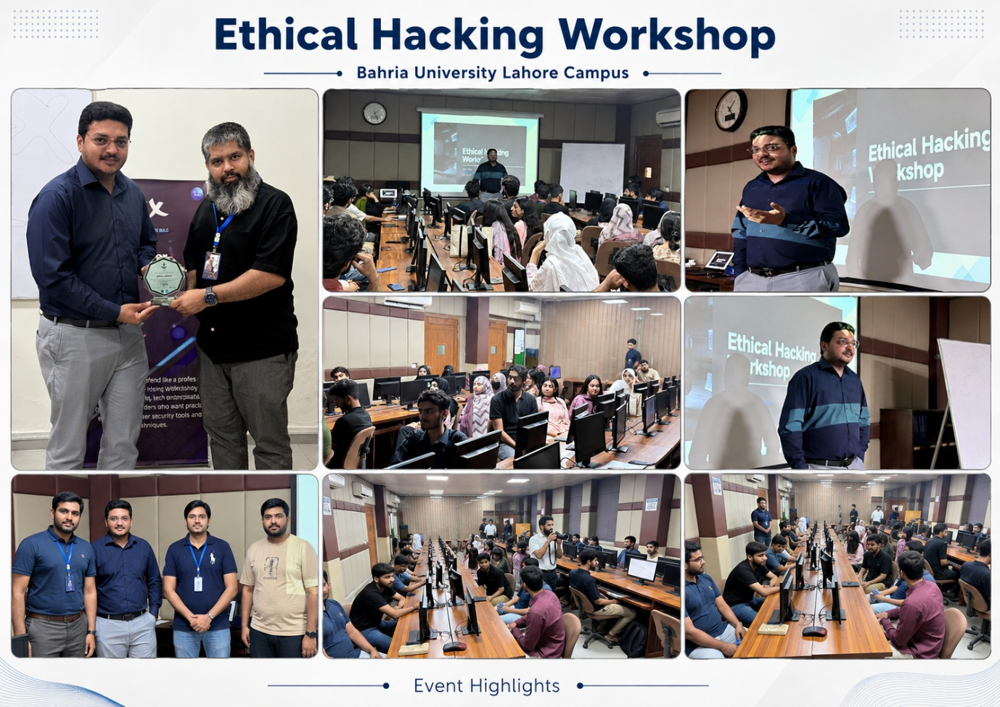

Artificial intelligence is transforming cybersecurity by strengthening threat detection, automating security analysis, and improving incident response. At the same time, AI is enabling more sophisticated phishing, social engineering, malware development, impersonation, and automated cyberattacks.
To help students understand this rapidly changing landscape, volunteers and academic contributors associated with Bahria University Lahore Campus, IEEE Lahore Section, and IEEE Region 10 supported an educational initiative focused on ethical hacking, cybersecurity awareness, and the emerging influence of artificial intelligence on cyber defence.
A central activity within this initiative was the Ethical Hacking Workshop, conducted on 14 May 2026 at Bahria University Lahore Campus. The workshop featured Mr. Adeel Akbar as the guest speaker and provided students with practical exposure to ethical hacking concepts, cyber-risk awareness, defensive security practices, and the responsible identification of vulnerabilities.

Practical Ethical Hacking Workshop
The workshop was designed to help participants understand how cybersecurity professionals identify weaknesses before malicious actors can exploit them. The session introduced the ethical and legal foundations of penetration testing and emphasized that security testing must always be conducted with authorization, a defined scope, and professional responsibility.
Participants were introduced to reconnaissance, vulnerability assessment, common attack surfaces, password security, phishing awareness, web application weaknesses, network security, and responsible vulnerability reporting.
The essential distinction: ethical hacking is performed with permission and with the objective of strengthening security, not causing harm.
Mr. Adeel Akbar discussed the importance of adopting an attacker’s perspective while maintaining a defender’s responsibility. This approach helped students understand that effective cybersecurity requires more than the use of tools. It also demands analytical thinking, careful observation, ethical judgment, documentation, and a clear understanding of organizational risk.
Connecting Ethical Hacking with Artificial Intelligence
The workshop provided a useful foundation for discussing the growing role of artificial intelligence in cybersecurity. AI-supported tools can help security professionals analyze large volumes of network traffic, identify suspicious behavior, classify malware, prioritize vulnerabilities, detect phishing attempts, and support incident response.
However, participants were encouraged to recognize that AI also introduces new challenges. Cybercriminals may use generative AI to create realistic phishing emails, automate reconnaissance, produce deceptive content, imitate trusted individuals, or accelerate the development of malicious scripts. Future cybersecurity professionals must therefore understand both traditional ethical hacking techniques and AI-enabled security risks.
AI should support, rather than replace, human cybersecurity expertise.
Automated findings must still be validated by trained professionals because inaccurate results, false positives, incomplete context, or poorly configured systems can lead to incorrect decisions.
Value for Students and IEEE Volunteers
The activity demonstrated how volunteer-led technical education can connect classroom learning with real cybersecurity challenges. Students gained exposure to practical security concepts while developing a stronger understanding of responsible technology use.
For IEEE volunteers, Sections, Chapters, Student Branches, and educational communities, workshops of this kind provide an effective model for promoting technical learning, professional ethics, responsible innovation, and student engagement. They also create opportunities for collaboration among academics, industry practitioners, students, and young professionals.
The Ethical Hacking Workshop contributed to IEEE’s wider educational mission by encouraging lifelong learning and helping participants understand their responsibility in building safer digital systems. It also showed how local initiatives within IEEE Region 10 and the IEEE Lahore Section can contribute to the global discussion on cybersecurity education and responsible AI adoption.